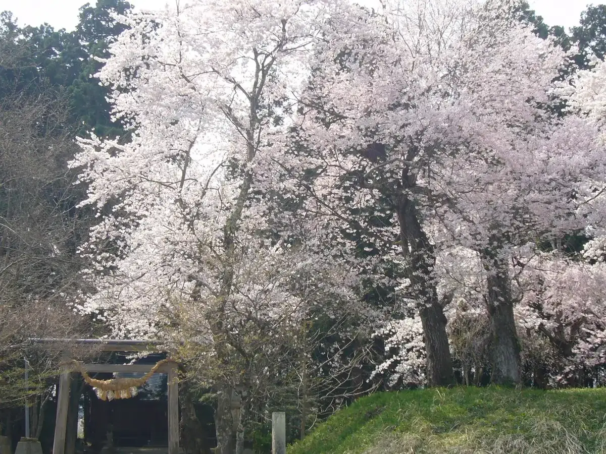
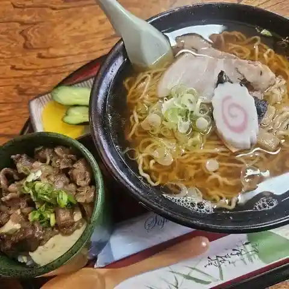
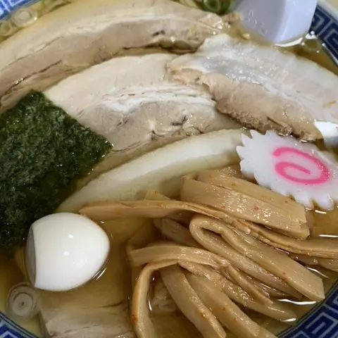
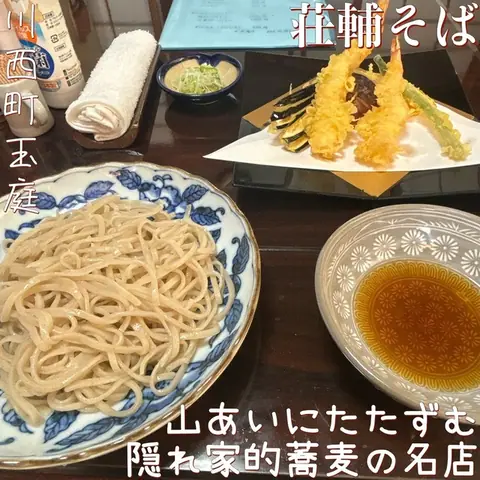
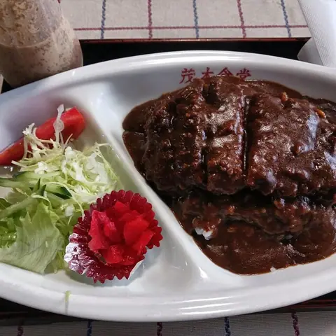
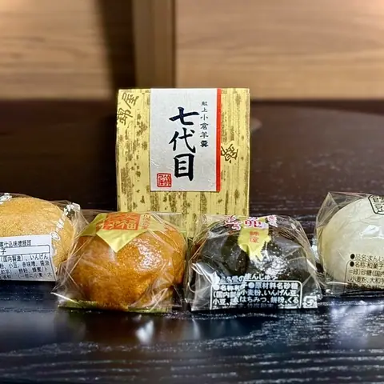
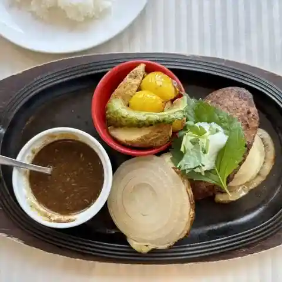
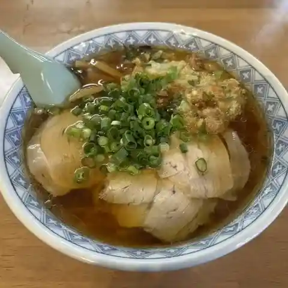
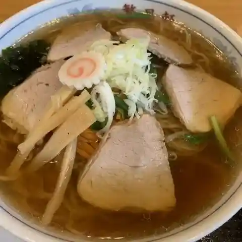

Kawanishi
Kawanishi · Yamagata
Kawanishi
Highlighted on the Yamagata map.

Stay
川西温泉 川西町浴浴センター まどか
Kawanishi Onsen Kawanishi Machi Yoku Yoku Sentaa Madoka
Onsen lodging in Kawanishi, Yamagata.
Dining
あっさり

Assari
Local-cuisine restaurant in Kawanishi, Yamagata.
もちや

Mochiya
Ramen shop in Kawanishi, Yamagata.
荘輔そば

Sou Suke Soba
Soba restaurant in Kawanishi, Yamagata.
茂木食堂

Motegi Shokudou
Shokudo diner in Kawanishi, Yamagata.
銘菓の錦屋

Meika No Nishiki Ya
Japanese sweets shop in Kawanishi, Yamagata.
レストラン燦燦

Resutoran San San
Shokudo diner in Kawanishi, Yamagata.
はしもと屋

Hashimoto Ya
Ramen shop in Kawanishi, Yamagata.
繁昌軒

Hanjou Ken
Shokudo diner in Kawanishi, Yamagata.
オオツカヤ
Ootsukaya
Shokudo diner in Kawanishi, Yamagata.
金ちゃんラーメン 川西店
Kin Chan Raamen Kawanishi Mise
Ramen shop in Kawanishi, Yamagata.
菓子司 十印
Kashi Tsukasa Juu In
Japanese sweets shop in Kawanishi, Yamagata.
三桝屋・四季の味山里菜
Mimasu Ya Shiki No Aji Yamazato Na
Japanese restaurant in Kawanishi, Yamagata.
麺屋 へえべ
Men Ya Heebe
Ramen shop in Kawanishi, Yamagata.
さっぽろ
Sapporo
Ramen shop in Kawanishi, Yamagata.
華龍
Hana Ryuu
Chinese restaurant in Kawanishi, Yamagata.
馬肉ラーメン やまき
Baniku Raamen Yamaki
Ramen shop in Kawanishi, Yamagata.
バンバン食堂
Banban Shokudou
Ramen shop in Kawanishi, Yamagata.
サトー屋菓子店
Satoo Ya Kashi Mise
Japanese sweets shop in Kawanishi, Yamagata.
Face to Face
Face To Face
Café in Kawanishi, Yamagata.
ひょうたん
Hyoutan
Udon restaurant in Kawanishi, Yamagata.
蕎麦処かも屋
Sobadokoro Kamo Ya
Soba restaurant in Kawanishi, Yamagata.
キッチン&バー カリスマ
Kitchin & Baa Karisuma
Izakaya in Kawanishi, Yamagata.
醤々ラーメン 川西店
Shou (Kurikaesi) Raamen Kawanishi Mise
Ramen shop in Kawanishi, Yamagata.
川西ダリヤ園
Kawanishi Dariya Sono
Shokudo diner in Kawanishi, Yamagata.